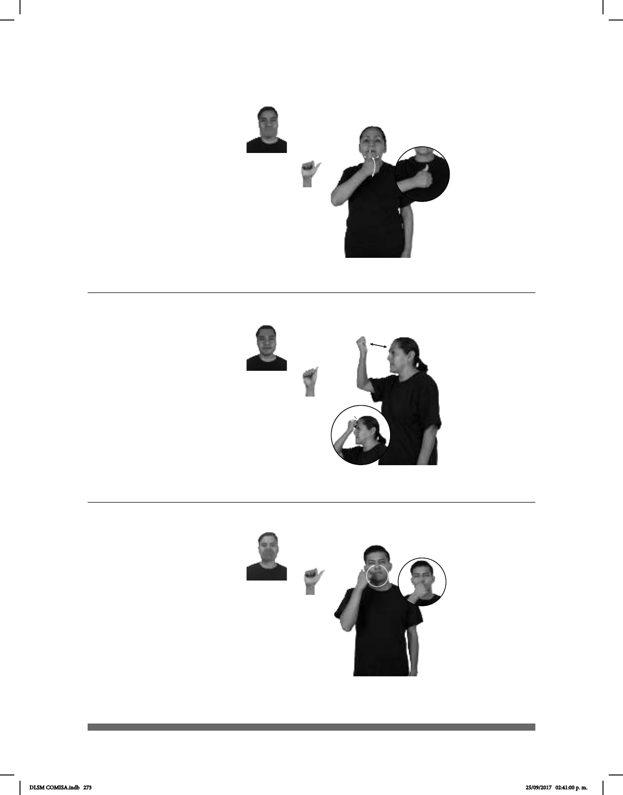

273
Seña: SM
A.1
Palma hacia dentro.
Lateral del dedo pulgar
sobre la barbilla.
Recto hacia abajo.
País ubicado en el
norte de Europa cuya capital es
Tallinn.
(A-121)
ESTONIA FRONTERA RUSIA
allá
Estonia tiene una frontera con Rusia.
Seña: SM
A.9
Palma hacia dentro.
A la altura de la frente.
La mano golpea la
frente en línea recta.
adj. Que es tonto,
limitado o torpe; que muestra falta
de inteligencia o de ingenio.
(A-122)
él-DECIR-a-mí ESTÚPIDO
Seña: SM
A.1
Palma hacia dentro.
A la altura de la cara.
La mano se
mueve formando un círculo hacia la
izquierda.
País del este de África
cuya capital es Adís Abeba.
(A-123)
ETIOPÍA BANDERA TENER UNA ESTRELLA
La bandera de Etiopía tiene una estrella.
DLSM COMISA.indb 273 25/09/2017 02:41:00 p. m.